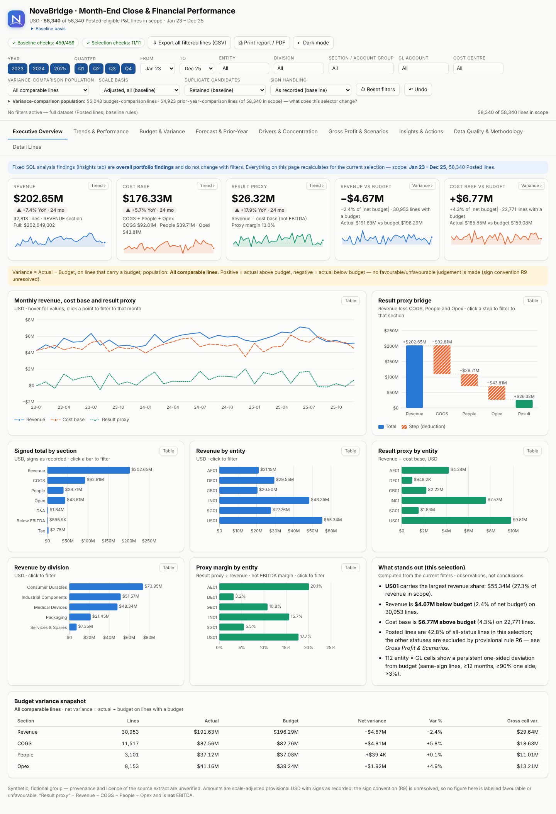
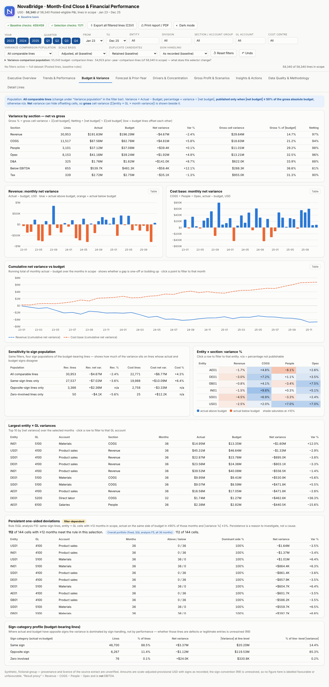
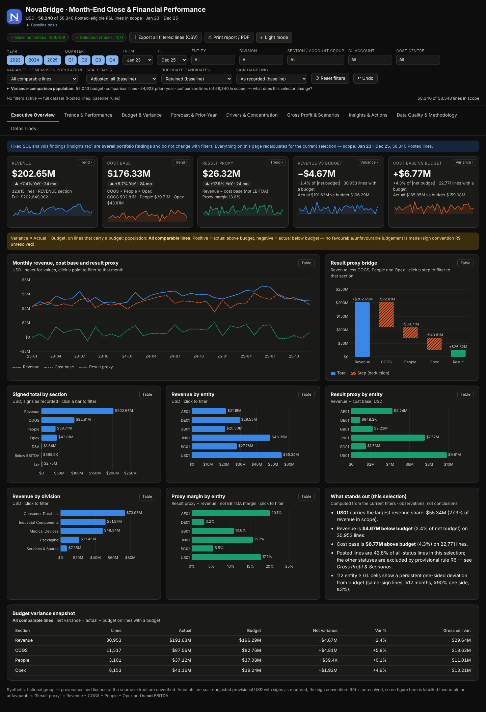

$202.65MRevenue, Posted journals only
$471.58MRevenue if every status is counted
58,340of 152,682 lines qualify for the reported P&L
459 / 459baseline checks pass in the dashboard
Executive overview

Budget variance

Dark theme

Limits: synthetic data for a fictional group; counting only Posted journals is the author's assumption, and the dashboard shows how far the headline moves under other rules.